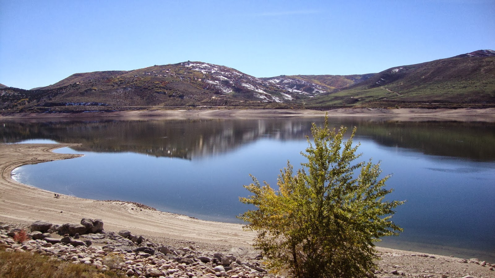
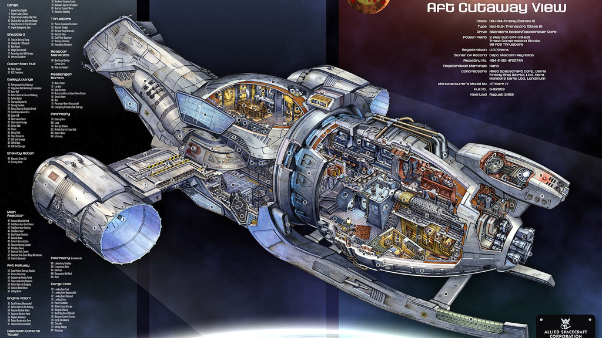
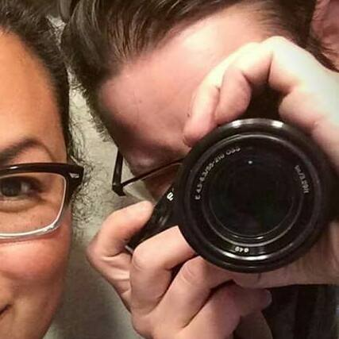
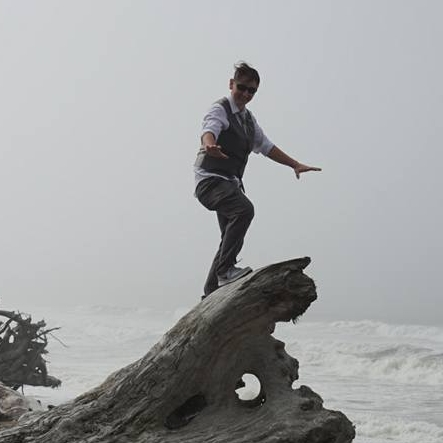
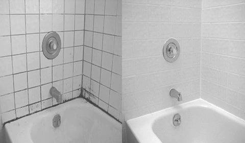
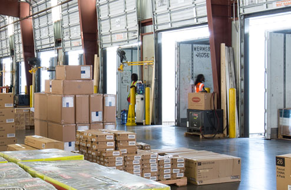
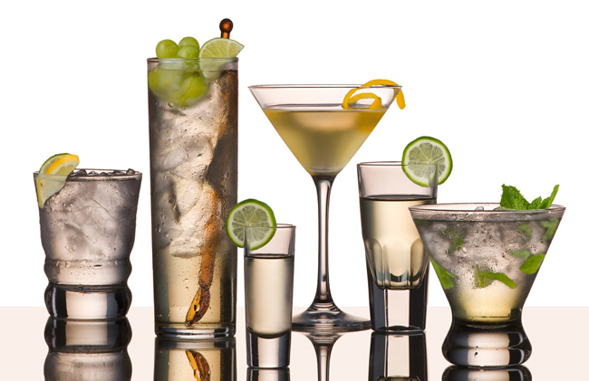
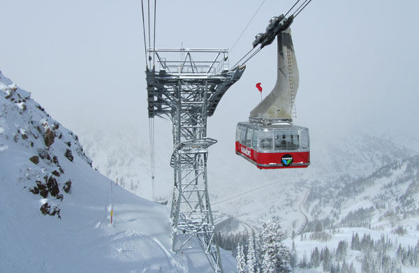

My Story
- Places 
- People and Places
- Things 
- Places with Person and Things 
- Plans
I grew up in Salt Lake city, UT. I attended many schools there and lived in many different parts of the Salt Lake vally. I also lived briefly in Alaska, California, Virginia and Lakewood, WA.
My upbringing instilled in me a deep love for the outdoors and a near obsession with books. When the weather was nice, my dad and our family spent our weekends camping at the high mountian lakes, waterskiing and windsurfing. My best friend's mother would regularly take us on road trips to see the National Parks in the region- from Mesa Verde, CO to Yellowstone. My mother and both of my grandmothers were avid readers, and they passed their love on to me.
I still spend a lot of my free time reading. I love fiction, fantasy, sci-fi and science fact books, but will read and collect a wide range of books. I enjoy playing long, story-heavy rpgs, mostly on my PlayStation though I aspire to move into computer gaming. I also aspire to some day play a game of table-top D&D...I am a D&D geek who has never played an actual game.
My favorite thing to do is jump in the car with my camera and my wife to explore our world. We love to spend time on the Olympic Peninsula, and actually took a road trip there for our honeymoon!
We moved to the Seattle area in 2013, and got married in Poulsbo in 2015. I started Epicodus in 2017, and plan to take over the world by 2020.
My Previous Work
I began my journey toward being a developer in 2017. I needed a new path in life, something challenging, something that is constantly evolving. I started to research the ways to break into computers (yes, that broad term was my first idea!), and found myself drawn to coding. Once I tried it, via a few different online resources, I was hooked! So I joined Epicodus to start my new adventure.
Here's what I did before then:
- Grout Doctor 
- Shopko Receiving Specialist 
- Bartender 
- Snomobile Tour 
We repaired tile grout. Clean, seal, recaulk, replace- whatever it needed to look new again and make the customer happy. I was a senior tech, so I also provided work estimates and did scheduling in addition to the grout work itself.
I was in charge of all direct shipping into the store and all vendor/dc returns shipping out. I also got to build all the display furniture and assist with customers.
I served the drinks! More than that, I had to know when not to serve the drinks. This job also included a grab bag of maintenance duties, from fixing bar equipment to getting on the roof to service the swamp coolers.
This was a fun one! We ran guided snowmobile tours in the backcountry from Snowbird Ski Resort. My duties were to get people checked in and take them on a ride up the arial tram, down a ski-lift, and teach them to ride snowmobiles. We were all required to be first-aid and avalanche safety certified, and to take regular training to keep up to date.
I also spent time doing front and back-end retail, managing the grill part of a bar and grill, and delivering for an artisan bread company. I have made pizza and coffee, been the janitor for a busy ski bar, run a message center, and done groundsman tree work. I have been on teams, run teams, and worked completely solo. Above all, I am highly adaptable and capable of working with people on any level. I deliver perfect customer service whether the customer are bar patrons, homeowners needing repair, first-time visitors to the snow, or my fellow employees.